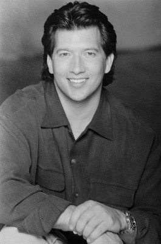
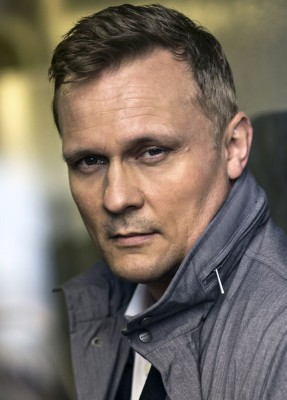
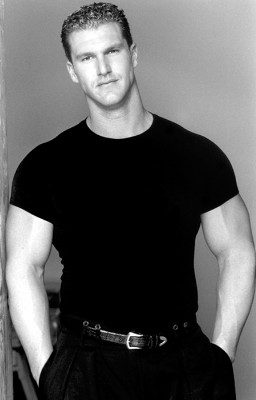

#6460 Resident Evil 6 - The Final Chapter


 IMDB-Wertung: 5.6 / 10
IMDB-Wertung: 5.6 / 10  Metascore: 0
Metascore: 0 
Alice (Milla Jovovich) gelangt mit den restlichen Überlebenden nach Washington, D.C. Im Weißen Haus wartete jedoch eine böse Überraschung auf alle Beteiligten: Wesker (Shawn Roberts) hat das Kommando übernommen und infiziert Alice wieder mit dem T-Virus. Dadurch erlangt diese ihre alten Kräfte zurück und verwandelt sich in eine unberechenbare Killermaschine.\r Gleichzeitig ist Alice nun die letzte Hoffnung der Menschheit, denn das komplette Areal droht von hungrigen Zombies überrannt zu werden. Doch ist Alice auch bereit, sich mit ihrem Erzfeind zu verbünden, um den vernichtenden Machenschaften der Red Queen endgültig ein Ende zu setzen?
Jahr: 2016
Dauer: 106 Minuten
FSK: 16
Land: England Studio: Constantin FilmTonspuren: DD5.1 - ,
Untertitel: Deutsch,
Auflösung: 1080p (1920x800) Größe: 7936 MB
Genre: Action, Thriller, Horror, Sci-Fi
Regisseur: Paul W.S. Anderson
Drehbuch: Paul W.S. Anderson
Soundtrack:
Darsteller:
 Milla Jovovich als Alice / Alicia Marcus
Milla Jovovich als Alice / Alicia Marcus Iain Glen als Dr. Isaacs
Iain Glen als Dr. Isaacs Ali Larter als Claire Redfield
Ali Larter als Claire Redfield Shawn Roberts als Wesker
Shawn Roberts als Wesker- Eoin Macken als Doc
- Fraser James als Razor
 Ruby Rose als Abigail
Ruby Rose als Abigail- William Levy als Christian
- Rola als Cobalt
- Ever Anderson als Young Alicia / Red Queen
- Milton Schorr als Thin Man
- Siobhan Hodgson als Emaciated Woman
- Joon-Gi Lee als Commander Chu
- Lee Raviv als School Girl
- Raquel Gecelter als School Child , as Raquel
 Pasquale Aleardi als J.D. , archive footage, uncredited
Pasquale Aleardi als J.D. , archive footage, uncredited- Ashanti als Betty , archive footage, uncredited
- Linden Ashby als Chase , archive footage, uncredited
- Stephen Billington als Mr. White , archive footage, uncredited
- Liz May Brice als Medic , archive footage, uncredited
 Jaymes Butler als Clarence , archive footage, uncredited
Jaymes Butler als Clarence , archive footage, uncredited- Chad Camilleri als Undead on Street , archive footage, uncredited
- Jo Chim als Network Anchor #1 , archive footage, uncredited
- Martin Crewes als Kaplan , archive footage, uncredited
 Kevin Durand als Barry Burton , archive footage, uncredited
Kevin Durand als Barry Burton , archive footage, uncredited- Aryana Engineer als Becky , archive footage, uncredited
 Oded Fehr als Carlos Olivera , archive footage, uncredited
Oded Fehr als Carlos Olivera , archive footage, uncredited Tig Fong als Umbrella Trooper , archive footage, uncredited
Tig Fong als Umbrella Trooper , archive footage, uncredited Jared Harris als Dr. Ashford , archive footage, uncredited
Jared Harris als Dr. Ashford , archive footage, uncredited Boris Kodjoe als Luther West , archive footage, uncredited
Boris Kodjoe als Luther West , archive footage, uncredited-  Steve Lucescu als Umbrella Trooper , archive footage, uncredited
 Eric Mabius als Matt , archive footage, uncredited
Eric Mabius als Matt , archive footage, uncredited Heike Makatsch als Lisa , archive footage, uncredited
Heike Makatsch als Lisa , archive footage, uncredited Joseph May als Dr. Blue , archive footage, uncredited
Joseph May als Dr. Blue , archive footage, uncredited- Mika Nakashima als J. Pop Girl , archive footage, uncredited
-  Carsten Norgaard als Zombie Steve , archive footage, uncredited
 Indra Ové als Ms. Black , archive footage, uncredited
Indra Ové als Ms. Black , archive footage, uncredited James Purefoy als Spence , archive footage, uncredited
James Purefoy als Spence , archive footage, uncredited Colin Salmon als One , archive footage, uncredited
Colin Salmon als One , archive footage, uncredited Brian Steele als Rancid , archive footage, uncredited
Brian Steele als Rancid , archive footage, uncredited-  Matthew G. Taylor als Nemesis , archive footage, uncredited
 Johann Urb als Leon , archive footage, uncredited
Johann Urb als Leon , archive footage, uncredited- Mark Simpson als James Marcus
- Aubrey Shelton als Scars
- Caroline Midgley als One Ear
- Dylan Skews als Commander Crunch
- Kevin Otto als Male Teacher
- Deniel Denysschen als School Boy
- Leo Russel als School Child
- Matthew Bartman als School Child
Datei: X:\7+mehr(A-Z)\Resident Evil\Resident Evil 6 - The Final Chapter (2016, FSK16, 1920x800).mkv seit 23.06.2017
Festplatte: HD Collection-7+mehr(A-Z)+Person
 Es gibt insgesamt 15 Filme in der Gruppe '7+mehr(A-Z)\Resident Evil'
Es gibt insgesamt 15 Filme in der Gruppe '7+mehr(A-Z)\Resident Evil'